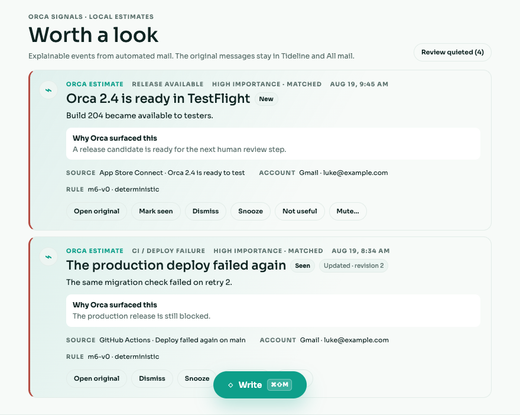
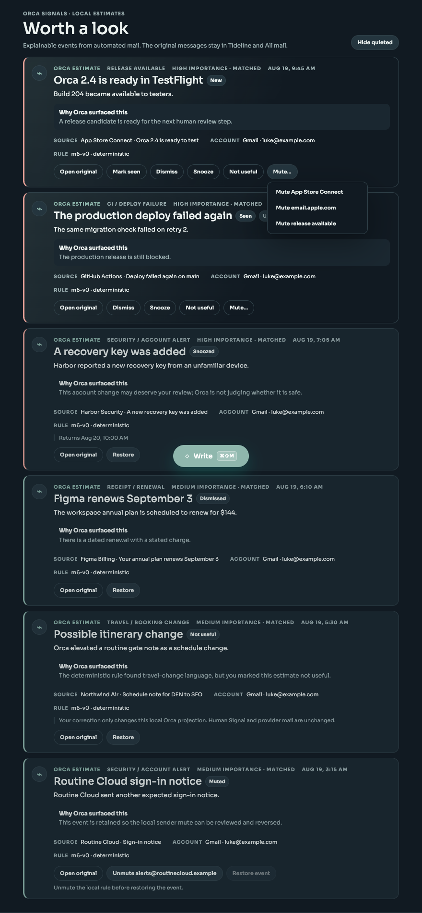

Evaluation coverage
12 / 12
Required fixture scenarios are named with expected outcomes and executable evidence.
A reviewer-facing record of Orca’s deterministic propagation slice: what surfaced, what stayed quiet, what an external agent could read, and where the boundaries held.
Required fixture scenarios are named with expected outcomes and executable evidence.
The first local slice is deterministic and does not read an OpenAI API key.
MCP exposes four bounded read tools; lifecycle actions mutate only Orca’s local projection.
“Observed” points to an executable assertion; live-only limitations are called out separately instead of being reported as passes.
| Fixture | Expected outcome | Observed result |
|---|---|---|
| TestFlight / release | Base timeline; source remains in Tideline | Demo + service pass |
| CI / deploy failure | One high-importance event with plain explanation | Revision pass |
| Security / account alert | Timeline event; content cannot alter authority | Boundary pass |
| Receipt / renewal | Consequential charge or renewal propagates | Demo pass |
| Travel / booking change | Meaningful itinerary change and source link | Demo pass |
| Newsletter / marketing | No propagation by default; Tideline discoverable | No-event pass |
| Direct human mail | No automated event; Human Inbox unchanged | Human Signal pass |
| Uncertain mail | No forced event; Review unchanged | Human Signal pass |
| False positive + mute | Correction persists; future match suppressed locally | Lifecycle pass |
| Duplicate + follow-up | Retry dedupes; meaningful follow-up updates | Idempotency pass |
| Mixed thread | Per-message authorship and source attribution preserved | Attribution pass |
| Multiple accounts | Separate attribution; cross-account reads denied | MCP pass |
| Instruction-like email text | Returned only as untrusted_external_content; tool catalog and authorization stay fixed. | Pass |
| Code / PKCE replay | Authorization code is single-use; refresh replay revokes the connection. | Pass |
| Wrong resource / scope escalation | Exact audience/resource and allowlisted read scopes fail closed. | Pass |
| Revocation / account isolation | Every call rechecks live grant and current ownership intersection. | Pass |
| Secrets in diagnostics | Provider-prefixed tokens, OAuth codes, API keys, cookies, and bearer values redact recursively. | Pass |
| Provider mutations | No MCP write tool; propagation and lifecycle paths do not call provider write transports. | Pass |
Observed push-path time from normalized source persistence through committed SQLite event. The manual/fallback observation was 19.33 ms; both are comfortably below the explicit 2,000 ms local target. Provider fetch/delivery time is outside this boundary.
The sync result—not propagation—is authoritative for ingestion. The Gmail integration suite injects storage and evaluator failures, verifies the source message remains stored, and asserts body and exception secret markers never enter structured telemetry.
list_agent_events and get_thread, then inspect the source link.Honest environment boundary: the repository suite proves the full OAuth issuance → MCP read → live revocation path locally. A literal ChatGPT/Codex UI connection requires a reviewer-controlled public HTTPS endpoint and was not claimed from a loopback-only workspace. Live Outlook remains deferred; provider-neutral fixtures cover its normalized shape without depending on Microsoft approval.
Current platform safety guidance: official OpenAI documentation for remote MCP servers.

Light · normal. Separate captured artifacts cover pressed/focus, loading, error, action error, and disabled.

Dark · selected/pressed + focus. Normal, loading, error, and action-error artifacts are captured alongside it.
bun install --frozen-lockfile
bun run typecheck
bun run test
bun run build
# Focused BRE-269 catalog and latency boundary
bun run --cwd apps/api test -- src/agents/m6-validation.test.ts src/agents/m6-latency.test.ts
# Stacked propagation, OAuth/MCP, lifecycle, and UI suites
bun run --cwd apps/api test -- src/agents/propagation/deterministic.test.ts src/agents/propagation/service.test.ts src/agents/propagation/store.test.ts src/agents/propagation/gmail-integration.test.ts
bun run --cwd apps/api test -- src/agents/mcp.test.ts src/agents/mcp-oauth.test.ts src/agent-events.routes.test.ts
bun run --cwd apps/web test -- src/agent-event-ui.test.tsx src/App.interaction.test.tsx src/styles.test.ts